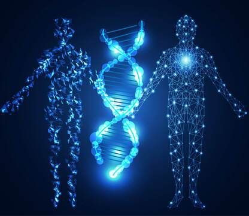

En concluion la genética es una ciencia fundamental para comprender la vida, ya que explica cómo se transmite la información biológica de una generación a otra y cómo esa herencia influye en las características físicas, fisiológicas y, en algunos casos, conductuales de los seres humanos. A través del proceso de herencia genética, cada individuo recibe una combinación única de genes que lo hacen diferente, lo que demuestra la enorme diversidad existente en la naturaleza y en la especie humana. Las características genéticas que heredamos no solo definen rasgos visibles como el color de los ojos o la forma del cabello, sino también aspectos internos como el grupo sanguíneo, el metabolismo o la predisposición a ciertas enfermedades. Sin embargo, la genética no actúa de manera aislada: el ambiente, la alimentación, los hábitos y el estilo de vida también influyen en la forma en que esos genes se expresan, lo que demuestra que la herencia genética y el entorno funcionan de manera complementaria. Dentro de este campo, las enfermedades genéticas representan un recordatorio de la importancia del conocimiento científico. Estas enfermedades surgen por mutaciones o alteraciones en los genes y pueden transmitirse de generación en generación. Algunas son visibles desde el nacimiento, mientras que otras se manifiestan con el tiempo o dependen de factores externos. Comprender su origen permite avanzar en tratamientos, prevención y acompañamiento familiar. Los estudios genéticos, por su parte, se han convertido en una herramienta esencial para la medicina actual. A través del análisis del ADN, es posible detectar mutaciones, conocer riesgos hereditarios, diagnosticar enfermedades antes de que aparezcan síntomas y diseñar estrategias médicas personalizadas. Estos estudios han transformado la forma en que se entiende la salud y han permitido que la ciencia no solo observe el pasado biológico, sino que también actúe sobre el futuro de cada individuo. En conjunto, la genética, la herencia, las características genéticas, las enfermedades hereditarias y los estudios genéticos forman un campo de conocimiento que no solo amplía nuestra comprensión sobre quiénes somos, sino que también abre caminos hacia una medicina más preventiva, precisa y humana. Conocer nuestra carga genética no significa solo entender nuestra historia, sino también tener la oportunidad de cuidar mejor nuestra salud y la de las futuras generaciones.
